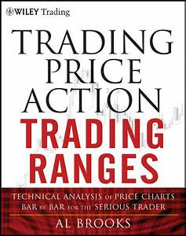
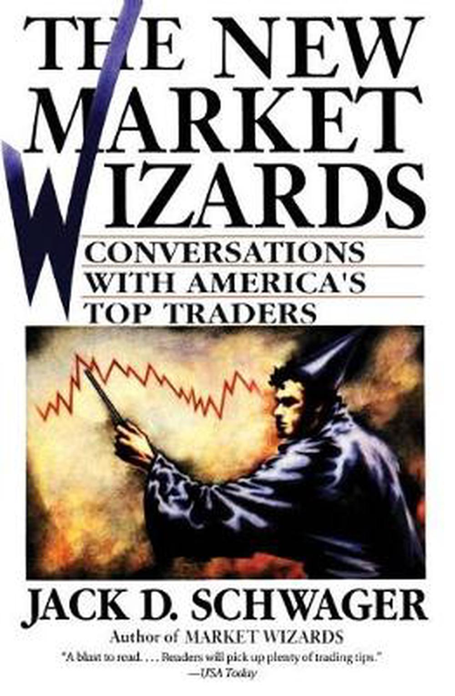
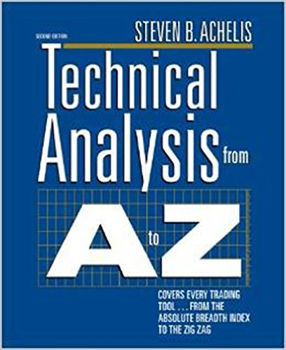

Find out the Best Books for Investment and Trading!
Top 5 Books suggested by Traders and Investers
#1 Rich Dad Poor Dad
Rich Dad Poor Dad is about Robert Kiyosaki and his two dads—his real father (poor dad) and the father of his best friend (rich dad)—and the ways in which both men shaped his thoughts about money and investing.
#2 The Intelligent Investor
The Intelligent Investor by Benjamin Graham, first published in 1949, is a widely acclaimed book on value investing. The book teaches readers strategies on how to successfully use value investing in the stock market. Historically, the book has been one of the most popular books on investing and Graham’s legacy remains.

#3 Trading Price Action Trading Ranges
Al Brooks has written a book every day trader should read. On all levels, he has kept trading simple, straightforward, and approachable. By teaching traders that there are no rules, just guidelines, he has allowed basic common sense to once again rule how real traders should approach the market. This is a must-read for any trader that wants to learn his own path to success.

#4 The New Market Wizards
In The New Market Wizards, successful traders relate the financial strategies that have rocketed them to success. Asking questions that readers with an interest or involvement in the financial markets would love to pose to the financial superstars, Jack D. Schwager encourages these financial wizards to share their insights. Entertaining, informative, and invaluable, The New Market Wizards is destined to become another Schwager classic.

#5 Technical Analysis From A to Z
Millions of traders participating in today's financial markets have shot interest and involvement in technical analysis to an all-time high. This updated edition of Technical Analysis from A to Z combines a detailed explanation of what technical analysis is and how it works with overviews, interpretations, calculations, and examples of over 135 technical indicatorsand how they perform under actual market conditions.